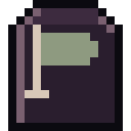

Guides
Everything you need to survive your first weeks in Footfall, straight from how the game works.
 01First stepsAccount, character, the first night and how to walk without drawing attention.
01First stepsAccount, character, the first night and how to walk without drawing attention.
 02LootingFrom the door or inside, furniture, noise, backpack and the stock that returns every week.
02LootingFrom the door or inside, furniture, noise, backpack and the stock that returns every week.
 03CombatThe action screen, the three control modes, shove, aim, weapons and how to escape.
03CombatThe action screen, the three control modes, shove, aim, weapons and how to escape.
 04Health and survivalWounds step by step, infection, hunger, thirst, cold, sleep and death.
04Health and survivalWounds step by step, infection, hunger, thirst, cold, sleep and death.
 05The baseMarking it out, walls, doors, chests, garden, traps and the nightly attack.
05The baseMarking it out, walls, doors, chests, garden, traps and the nightly attack.

06Group, market and strongholdsPlaying together, trading with stamps and taking over city places. 07The crow and the radioWhat the crow warns about, Crow Radio, the weekly horde, weather and full moon.
07The crow and the radioWhat the crow warns about, Crow Radio, the weekly horde, weather and full moon.
 08MemoriesThe rare books, the depot shelf and the seven playable stories.
08MemoriesThe rare books, the depot shelf and the seven playable stories.
Before you go outPlay with your head up: never while driving, and never enter real buildings or private land because of the game.
Guias
Tudo o que você precisa para sobreviver às primeiras semanas no Footfall, direto de como o jogo funciona.
01Primeiros passosConta, personagem, a primeira noite e como andar sem chamar atenção.
02SaquePela porta ou entrando, móveis, barulho, mochila e o estoque que volta toda semana.
03CombateA tela de ação, os três controles, empurrão, mira, armas e como fugir.
04Saúde e sobrevivênciaFeridas passo a passo, infecção, fome, sede, frio, sono e a morte.
05A baseDemarcar, paredes, portas, baús, horta, armadilhas e o ataque de toda noite.
06Grupo, mercado e pontosJogar junto, negociar com selos e tomar lugares da cidade.
07O corvo e o rádioO que o corvo avisa, a Rádio Corvo, a horda da semana, clima e lua cheia.
08MemóriasOs livros raros, a estante do depósito e as sete histórias jogáveis.
Antes de sairJogue de cabeça erguida: nunca dirigindo, e nunca entre em prédios ou terrenos de verdade por causa do jogo.
Guías
Todo lo que necesitas para sobrevivir tus primeras semanas en Footfall, directo de cómo funciona el juego.
01Primeros pasosCuenta, personaje, la primera noche y cómo caminar sin llamar la atención.
02SaqueoDesde la puerta o entrando, muebles, ruido, mochila y el stock que vuelve cada semana.
03CombateLa pantalla de acción, los tres controles, empujón, puntería, armas y cómo huir.
04Salud y supervivenciaHeridas paso a paso, infección, hambre, sed, frío, sueño y la muerte.
05La baseDelimitar, paredes, puertas, cofres, huerta, trampas y el ataque de cada noche.
06Grupo, mercado y puntosJugar juntos, negociar con sellos y tomar lugares de la ciudad.
07El cuervo y la radioLo que avisa el cuervo, Radio Cuervo, la horda de la semana, clima y luna llena.
08MemoriasLos libros raros, la estantería del depósito y las siete historias jugables.
Antes de salirJuega con la cabeza en alto: nunca manejando, y nunca entres en edificios o terrenos reales por el juego.